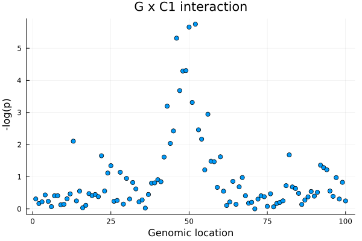
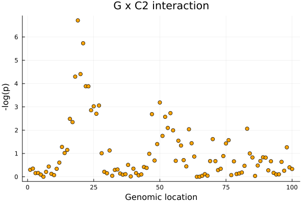
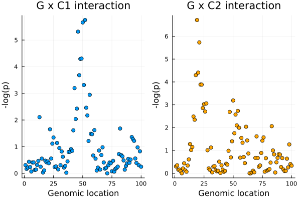
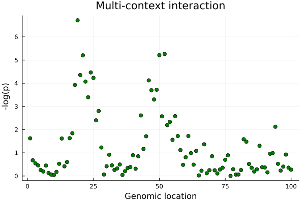

Interaction effect (context-dependent)
Besides an eQTL's main effect, Dynema can map context-depedent eQTLs by testing interaction effect(s). In this example, we can map interaction effects with each of the cell states with a single-context interaction test or all cell states of interests jointly with a multi-contetext interaction test.
Single-context interaction
Let's consider the question: is the effect of an eQTL different between non-cytotoxic and cytotoxic T cells? We can answer this question by testing an interaction with C1 (T cell cytotoxicity). In this case, C1 is a single-cell level context variable with mean= 0 and variance = 1, where positive values reflect more cytotoxicity.
Let's define the formula:
f_GXC1 = @formula(0 ~ 1 + G + C1 + C2 + C3 +
scaled_age + sex + scaled_log_nUMI + percent_mito +
gPC1 + gPC2 + gPC3 + gPC4 + gPC5 +
ePC1 + ePC2 + ePC3 + ePC4 + ePC5 +
G & C1)FormulaTerm
Response:
0
Predictors:
1
G(unknown)
C1(unknown)
C2(unknown)
C3(unknown)
scaled_age(unknown)
sex(unknown)
scaled_log_nUMI(unknown)
percent_mito(unknown)
gPC1(unknown)
gPC2(unknown)
gPC3(unknown)
gPC4(unknown)
gPC5(unknown)
ePC1(unknown)
ePC2(unknown)
ePC3(unknown)
ePC4(unknown)
ePC5(unknown)
G(unknown) & C1(unknown)As in Main effect, we include donor- and single-cell-level covariates (scaled_age, sex, gPC1-5, scaled_log_nUMI, percent_mito, ePC1-5) alongside the contexts – the same covariates the command-line interface passes via --covariates.
Notice that the interaction term G x C1 is denoted as G & CV1.
Next, we can simply run map_locus providing the interaction formula and specifying the term we want to test, in this case G & CV1.
res_gxc1 = map_locus(f_GXC1;
pheno = expr,
geno = ex_geno,
meta = meta,
groups = meta.donor_id,
termtest = ["G & C1"])
res_gxc1
Dynamic eQTL mapping (Dynema) model
E ~ 1 + G + C1 + C2 + C3 + scaled_age + sex + scaled_log_nUMI + percent_mito + gPC1 + gPC2 + gPC3 + gPC4 + gPC5 + ePC1 + ePC2 + ePC3 + ePC4 + ePC5 + G & C1
Term(s) = ["G & C1"]
N. variants = 100
N. cells = 4042
N. donors = 100
Test type = Score/lagrange multiplier
Results (variant/stat/p/tested term(s); 19 more column(s) -- covariates, untested contexts -- in the full results/--out file)
┌───────────┬─────────┬─────────────┬───────────┐
│ variant │ z │ p │ G & C1 │
├───────────┼─────────┼─────────────┼───────────┤
│ rs_snp_52 │ 4.77758 │ 1.77417e-6 │ 0.132761 │
│ rs_snp_50 │ 4.73532 │ 2.18705e-6 │ 0.163768 │
│ rs_snp_46 │ 4.57118 │ 4.84977e-6 │ 0.157633 │
│ rs_snp_49 │ 4.05743 │ 4.96156e-5 │ 0.120778 │
│ rs_snp_48 │ 4.05075 │ 5.10544e-5 │ 0.150211 │
│ rs_snp_47 │ 3.70895 │ 0.000208124 │ 0.139848 │
│ rs_snp_51 │ 3.48874 │ 0.00048531 │ 0.107612 │
│ rs_snp_43 │ 3.41613 │ 0.000635186 │ 0.102895 │
│ rs_snp_56 │ 3.2552 │ 0.00113314 │ 0.0758074 │
│ rs_snp_53 │ 2.92389 │ 0.00345688 │ 0.0860607 │
│ ... │ ... │ ... │ ... │
└───────────┴─────────┴─────────────┴───────────┘
Computation time = 0.7037 mins.
Let's extract the summary statistics and write into a text file (optional)
summ_gxc1 = get_summary(res_gxc1)
CSV.write("summ_gxc1.tsv", summ_gxc1, delim = "\t")"summ_gxc1.tsv"Assuming input variants are ordered by genomic location, let's make a quick locus plot:
using Plots
p_gxc1 = scatter(1:nrow(summ_gxc1), -log10.(summ_gxc1.p),
xlabel = "Genomic location", ylabel = " -log(p)",
title = "G x C1 interaction", legend = false)
Let's consider now mapping single-context interaction with Treg/activation status
f_GXC2 = @formula(0 ~ 1 + G + C1 + C2 + C3 +
scaled_age + sex + scaled_log_nUMI + percent_mito +
gPC1 + gPC2 + gPC3 + gPC4 + gPC5 +
ePC1 + ePC2 + ePC3 + ePC4 + ePC5 +
G & C2)
res_gxc2 = map_locus(f_GXC2;
pheno = expr,
geno = ex_geno,
meta = meta,
groups = meta.donor_id,
termtest = ["G & C2"])
res_gxc2
Dynamic eQTL mapping (Dynema) model
E ~ 1 + G + C1 + C2 + C3 + scaled_age + sex + scaled_log_nUMI + percent_mito + gPC1 + gPC2 + gPC3 + gPC4 + gPC5 + ePC1 + ePC2 + ePC3 + ePC4 + ePC5 + G & C2
Term(s) = ["G & C2"]
N. variants = 100
N. cells = 4042
N. donors = 100
Test type = Score/lagrange multiplier
Results (variant/stat/p/tested term(s); 19 more column(s) -- covariates, untested contexts -- in the full results/--out file)
┌───────────┬──────────┬─────────────┬───────────┐
│ variant │ z │ p │ G & C2 │
├───────────┼──────────┼─────────────┼───────────┤
│ rs_snp_19 │ 5.204 │ 1.95042e-7 │ 0.167821 │
│ rs_snp_21 │ 4.76793 │ 1.86125e-6 │ 0.174294 │
│ rs_snp_20 │ 4.11246 │ 3.91465e-5 │ 0.170101 │
│ rs_snp_18 │ 4.05393 │ 5.03633e-5 │ 0.177786 │
│ rs_snp_22 │ 3.8258 │ 0.000130349 │ 0.139402 │
│ rs_snp_23 │ 3.8244 │ 0.000131089 │ 0.158465 │
│ rs_snp_50 │ -3.41065 │ 0.000648077 │ -0.113275 │
│ rs_snp_27 │ 3.32866 │ 0.000872643 │ 0.105011 │
│ rs_snp_25 │ 3.30647 │ 0.000944793 │ 0.138383 │
│ rs_snp_24 │ 3.19585 │ 0.00139421 │ 0.114108 │
│ ... │ ... │ ... │ ... │
└───────────┴──────────┴─────────────┴───────────┘
Computation time = 0.01531 mins.
Let's make a second locus plot for G x C1:
summ_gxc2 = get_summary(res_gxc2)
p_gxc2 = scatter(1:nrow(summ_gxc2), -log10.(summ_gxc2.p),
xlabel = "Genomic location", ylabel = " -log(p)",
title = "G x C2 interaction", legend = false, color = "orange")
Let's compare results
plot(p_gxc1, p_gxc2)
Multi-context interaction
We can also test multiple contexts at once as follows:
f_int = @formula(0 ~ 1 + G + C1 + C2 + C3 +
scaled_age + sex + scaled_log_nUMI + percent_mito +
gPC1 + gPC2 + gPC3 + gPC4 + gPC5 +
ePC1 + ePC2 + ePC3 + ePC4 + ePC5 +
G & C1 + G & C2 + G & C3)
res_int = map_locus(f_int;
pheno = expr,
geno = ex_geno,
meta = meta,
groups = meta.donor_id,
termtest = ["G & C1", "G & C2", "G & C3"])
res_int
Dynamic eQTL mapping (Dynema) model
E ~ 1 + G + C1 + C2 + C3 + scaled_age + sex + scaled_log_nUMI + percent_mito + gPC1 + gPC2 + gPC3 + gPC4 + gPC5 + ePC1 + ePC2 + ePC3 + ePC4 + ePC5 + G & C1 + G & C2 + G & C3
Term(s) = ["G & C1", "G & C2", "G & C3"]
N. variants = 100
N. cells = 4042
N. donors = 100
Test type = Score/lagrange multiplier
Results (variant/stat/p/tested term(s); 19 more column(s) -- covariates, untested contexts -- in the full results/--out file)
┌───────────┬─────────┬─────────────┬───────────┬────────────┬─────────────┐
│ variant │ χ² │ p │ G & C1 │ G & C2 │ G & C3 │
├───────────┼─────────┼─────────────┼───────────┼────────────┼─────────────┤
│ rs_snp_19 │ 34.0468 │ 1.93659e-7 │ 0.0353357 │ 0.169176 │ -0.0359197 │
│ rs_snp_52 │ 27.1528 │ 5.4687e-6 │ 0.135702 │ -0.102257 │ 0.0154956 │
│ rs_snp_50 │ 26.9107 │ 6.14671e-6 │ 0.159666 │ -0.108483 │ 0.0385878 │
│ rs_snp_21 │ 26.8654 │ 6.28265e-6 │ 0.0284916 │ 0.174328 │ 0.016586 │
│ rs_snp_24 │ 23.3491 │ 3.41513e-5 │ 0.0730403 │ 0.117426 │ 0.0316271 │
│ rs_snp_20 │ 22.8096 │ 4.4247e-5 │ 0.051311 │ 0.173989 │ -0.0352293 │
│ rs_snp_25 │ 22.2267 │ 5.85165e-5 │ 0.0738144 │ 0.142312 │ 0.0169277 │
│ rs_snp_46 │ 21.699 │ 7.53458e-5 │ 0.15576 │ -0.0751612 │ -0.00143822 │
│ rs_snp_22 │ 21.4603 │ 8.44692e-5 │ 0.0732854 │ 0.140049 │ -0.00654957 │
│ rs_snp_18 │ 20.7579 │ 0.000118192 │ 0.0393526 │ 0.178002 │ -0.00657589 │
│ ... │ ... │ ... │ ... │ ... │ ... │
└───────────┴─────────┴─────────────┴───────────┴────────────┴─────────────┘
Computation time = 0.03228 mins.
summ_int = get_summary(res_int)
p_int = scatter(1:nrow(summ_int), -log10.(summ_int.p),
xlabel = "Genomic location", ylabel = " -log(p)",
title = "Multi-context interaction", legend = false, color = "green")
The multi-context interaction captures both G x C1 and G x C2 signals.